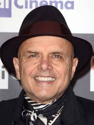

Will Smith
Idade: 55 anos
Nacionalidade: Filadélfia, Pensilvânia, EUA
Informação de Destaque: Will Smith é mundialmente conhecido principalmente por atuar na sitcom The Fresh Prince of Bel-Air (Um Maluco No Pedaço ou o príncipe de Bel-Air em Portugal), de 1990 até 1996.
Martin Lawrence
Idade: 59 anos
Nacionalidade: Frankfurt am Main, Alemanha
Informação de Destaque: Lawrence ganhou popularidade a partir da década de 1990, quando estrelou a sitcom Martin

Joe Pantoliano
Idade: 73 anos
Nacionalidade: Hoboken, Nova Jersey, EUA
Informação de Destaque: Joe Pantoliano, é um ator estadunidense conhecido principalmente pela sua atuação como Cypher em Matrix e o mafioso Ralph Cifarreto em Os Sopranos